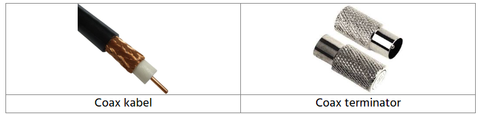
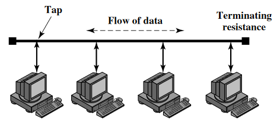
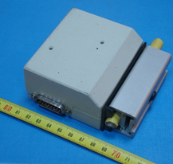
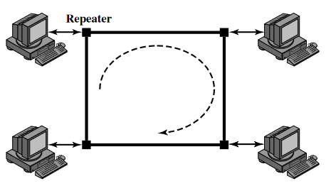
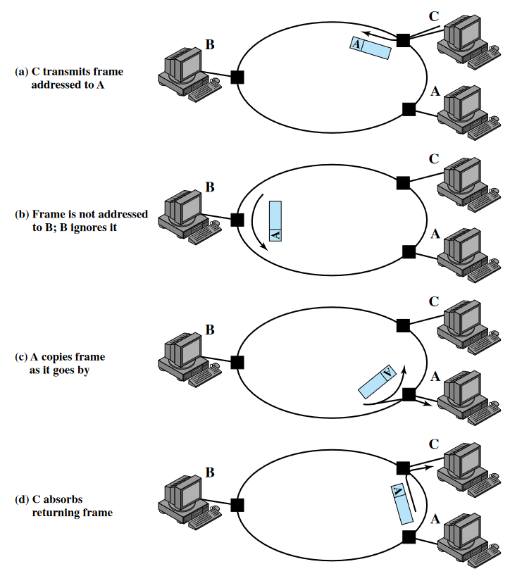
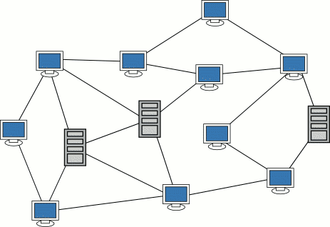
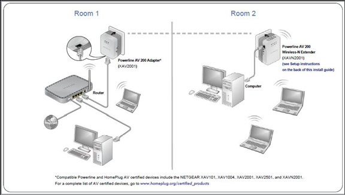
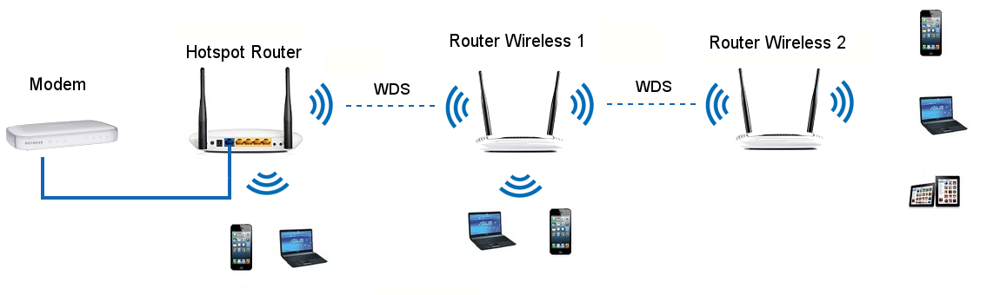
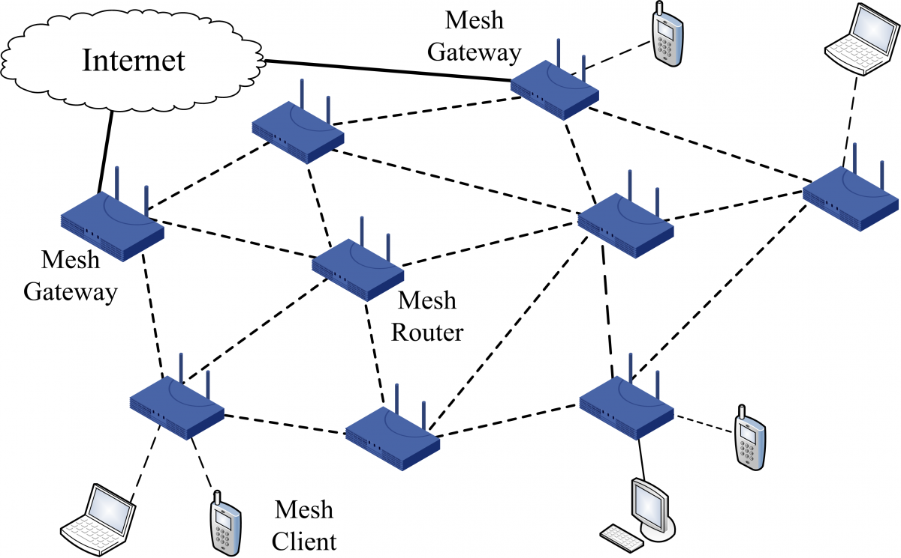

Netwerktopologie
In een netwerk worden alle hosts met elkaar verbonden maar er zijn natuurlijk meerdere manieren waarop je dat kan doen. Die verschillende manieren worden ook wel netwerk topologieën genoemd. We bespreken er een aantal die worden gebruikt in zowel computernetwerken als industriële netwerken.
Line
We bespreken eerst de line topologie. Zoals je kan zien worden alle nodes met elkaar doorverbonden.

Men noemt dat ook wel daisy chaining. De voor- en nadelen bij deze topologie zijn vrij vanzelfsprekend.
Voordelen:
- Er is heel weinig kabel nodig om de verschillende apparaten met elkaar te verbinden.
- Doordat er weinig kabel nodig is, is het vrij eenvoudig en goedkoop om te implementeren.
Nadelen:
- Als een link onderbroken wordt dan wordt het netwerk gesplitst wat een invloed heeft op alle apparaten.
- De hosts kunnen elkaars communicatie zien
Bus
In een bus netwerk worden alle computers serieel aangesloten op eenzelfde kabel. In de praktijk is dat meestal een coax-kabel. Iedere kabel heeft een begin- en eindpunt en deze punten moeten altijd worden afgesloten via een terminator.


Hosts takken af van de kabel met behulp van een tap. Dit is een connector met vampierenklemmen die door de isolatie heen prikken en zo verbinding maken met de geleiders.

Er is full duplex transmissie mogelijk wat betekent dat er tegelijkertijd kan verzonden en ontvangen worden door een host. Waar we echter wel moeten op letten is dat het transmissiemedium gedeeld is. Dit betekent dat er collisions (= botsingen) kunnen optreden wanneer hosts op hetzelfde moment gaan zenden. Bij een collision gaat de data verloren.
Als hosts zenden dan wordt het frame langs beide kanten van de kabel verstuurd. Een frame is een verzameling van bits die een boodschap van zender naar ontvanger voorstelt. Het spreekt voor zich dat het niet lang duurt vooraleer er collisions optreden, zelfs met een klein aantal apparaten op het netwerk.
Om collisions te vermijden of te detecteren op het gedeeld transmissiemedium kan er een vorm van channel access control worden geïmplementeerd. Hierover leer je later nog iets meer. Channel access control zal ervoor zorgen dat er geen twee zenders op hetzelfde moment een frame zullen versturen.
Verder is het ook zo dat wanneer een frame verstuurd wordt, dit ontvangen wordt door ieder apparaat dat verbonden is. Data kan bijgevolg gelezen worden door personen waarvoor het pakket niet bedoeld is.
Ieder apparaat ontvangt het frame, opent het en bekijkt het destination MAC adres. Voorlopig mag je onthouden dat het destination MAC adres het adres is van het apparaat naar waar het frame verstuurd wordt. Als dit overeenkomt met het eigen MAC adres dan wordt het frame behouden en anders wordt het vrijwillig gewist (= frame drop).
Zo'n MAC adres is zes bytes lang en je schrijft het als zes hexadecimale paren met een streepje ertussen, bijvoorbeeld 00-1A-2B-3C-4D-5E. Je komt ook de schrijfwijze met dubbele punten tegen, 00:1A:2B:3C:4D:5E.
Het wissen van frames op vrijwillige basis maakt dat een bus netwerk onveilig is. Het lezen van frames die niet voor een ontvanger bestemd zijn noemt men ook eavesdropping of luistervinken.
De frames (= elektrische signalen) worden geabsorbeerd door de terminator wanneer deze aan het eindpunt aankomen. Het niet correct afsluiten van de kabel met een terminator kan leiden tot het incorrect werken van het netwerk. Het volledige netwerk doen falen kan dus op twee manieren: de kabel doorknippen of de terminator verkeerd aansluiten. We spreken dan ook van een single point of failure.
De bus topologie wordt in deze vorm (met coax, taps en terminators) niet vaak meer gebruikt. Wel zie je deze topologie nog vaak terugkeren wanneer we het hebben over Powerline adapters. Deze komen later nog aan bod wanneer we het hebben over apparaten die we kunnen terugvinden in een netwerk.
Ring
Een ring netwerk bestaat uit een aantal repeaters die point-to-point met elkaar verbonden zijn in een gesloten lus. Een repeater is in deze context een apparaat dat langs de ene kant data binnenkrijgt, kopieert en dan langs de andere kant terug verstuurt. Point to point wil zeggen dat ze rechtstreeks met elkaar verbonden zijn.

De verbinding is unidirectioneel. Dit betekent dat de data in één richting verstuurd wordt, bijvoorbeeld in wijzerzin of tegenwijzerzin. Dit heeft als voordeel dat er minder collisions kunnen optreden ten opzichte van een bus netwerk dat bidirectioneel werkt. Sommige netwerken hebben meerdere ringen, dit wordt vooral gedaan om redundantie in te bouwen en de snelheid te verhogen. Eén ring mag bijvoorbeeld onderbroken worden, de andere ring neemt over.
Iedere host verbindt zich met het netwerk met behulp van een repeater en verzendt op deze manier data op het netwerk.
Net zoals bij bus en ster wordt data op het netwerk geplaatst als frames. Een frame gaat voorbij alle hosts, maar wordt enkel opgepikt door de bestemmeling. Deze stuurt op zijn beurt het frame dan verder het netwerk op tot het weer aankomt bij de verzender.
De hosts waarvoor het frame niet bestemd is negeren het en sturen het verder het netwerk op tot het terug aankomt bij de verzender. De verzender verwijdert het frame van het netwerk. Ieder frame legt dus een volledige ring af.
Omdat meerdere hosts dezelfde transmissielink gebruiken is er channel access control nodig om te bepalen welke host frames op het netwerk mag invoegen, anders krijgen we collisions.

Ster
In een ster netwerk is iedere host direct verbonden met een gemeenschappelijke centrale node. In de meeste gevallen is die centrale node een router of een switch en gebeurt de verbinding aan de hand van een ethernet kabel of draadloos via Wi-Fi.

Als het centrale punt een hub of een draadloos access point is dan fungeert het als een broadcast apparaat waarbij frames ontvangen worden en dan doorgestuurd worden naar alle hosts. Hoewel de topologie ster is, gedraagt het systeem zich dan als een bus netwerk.
Bij een draadloos access point is er een vorm van channel access control nodig om ervoor te zorgen dat hetzelfde fysieke transmissiemedium (= de ether) gedeeld kan worden. Als dat niet gebeurt treden er botsingen op waardoor de frames onleesbaar worden.
Als het centrale punt een bedrade switch of router is dan fungeert het als een unicast apparaat waarbij frames enkel tussen geadresseerde hosts worden uitgewisseld.
Uiteraard is het versturen van frames via unicast veel efficiënter. Misschien denk je dat er op deze manier geen media access control meer nodig is... Dit is echter niet zo want wat als meerdere hosts een frame willen sturen naar één en dezelfde ontvanger. Dan zou dat frame tegelijkertijd aankomen en een botsing veroorzaken. Dit kan uiteraard niet.
Een typisch ster netwerk zie je terug in heel wat SOHO (Small Office Home Office) netwerken met minder dan 10 computers. Deze topologie is dan ook aanwezig in de meeste huiskamers of kleine bedrijven en dat is niet toevallig.
Voordelen:
- Het inrichten van dit netwerk is heel goedkoop naar apparatuur en bekabeling toe;
- Het systeem is relatief stabiel. Als één host uitvalt blijft de rest gewoon actief, in tegenstelling tot bv. de bus topologie.
Nadeel:
- Zo gaat alle verkeer van iedere host langs dat ene centraal punt. Als dat centraal punt wegvalt is er geen communicatie tussen de verschillende hosts meer mogelijk.
Volledig / gedeeltelijk vermaasd (mesh)
Een vermaasd netwerk is geschikt voor intensieve datacommunicatie tussen verschillende gebieden.
- Eén van de voordelen van dit type netwerk is dat tussen twee nodes meestal de kortste (lees: snelste) route wordt gebruikt.
- Een ander voordeel is dat als er een verbinding uitvalt er een andere route kan gevolgd worden om toch de eindbestemming te bereiken.
- Een nadeel is dat er veel kabels moeten worden gelegd om alle verbindingen tot stand te brengen.
Een gedeeltelijk vermaasd netwerk is een vermaasd netwerk waarbij niet alle verbindingen worden gelegd maar waarbij er toch (in de meeste gevallen) een alternatieve route bestaat.

De meeste particuliere Wifi netwerken draaien rond 1 centrale router en hoe verder een client zich van dit apparaat verwijdert, hoe zwakker het signaal. Om dit tegen te gaan gebruikt men vaak een powerline adapter of een repeater.

OF

Beide oplossingen breiden het draadloos bereik uit maar zijn telkens nadelig voor de snelheid van clients. Een draadloze repeater halveert de snelheid omdat de ether een gedeeld transmissiemedium is waarover op een tijdstip x enkel verzonden of ontvangen kan worden.
Met een powerline adapter is dit niet het geval maar ook daar moet de snelheid over alle aangesloten clients gedeeld worden over 1 link die terug naar het centrale punt leidt.
Een mesh netwerk houdt de snelheid van het netwerk hoog terwijl het bereik uitgebreid wordt. In de winkel zal je het misschien ook terugvinden als multi-room Wifi.
Bij een mesh-configuratie werk je met een gedecentraliseerd systeem dat uit verschillende zendpunten bestaat die gelijkwaardig zijn. Er is dus geen hiërarchie.
Er is altijd één mesh-toestel dat je via een kabel met het internet aansluit. Deze deelt die verbinding dan draadloos met de dichtstbijzijnde nodes in het netwerk, die op hun beurt weer het signaal kunnen doorsturen naar verdere nodes.

De toestellen in een mesh-configuratie kunnen onderling met elkaar communiceren. Dit zorgt ervoor dat je een gelijkwaardige verdeling van het wifi-signaal hebt in je huis. Elke node kan immers zowel wifi ontvangen als uitzenden.
Door het grotere aantal nodes bestrijk je automatisch meer oppervlakte dan bij één centrale router, maar dé grote troef van mesh is het feit dat je automatisch en nagenoeg naadloos kan wisselen tussen de signalen van de nodes.
Bij een opstelling met een router en een extra access point of range extender moeten die laatsten altijd eerst communiceren met de basisrouter, terwijl mesh-nodes autonoom kunnen werken.
Vergelijk het met het huidige telefoonnetwerk: dat is zo opgezet dat iemand die al bellend rondloopt of in een voertuig zit naadloos tussen de signalen van verschillende zendmasten kan schakelen, zonder dat de gebruiker daarvan iets merkt aan de kwaliteit van het belsignaal.
Een mesh-systeem controleert continu of je nog wel op het sterkste signaal zit en schakelt je geruisloos over naar de optimale verbinding op basis van je locatie. Dit wordt ook wel handover genoemd.